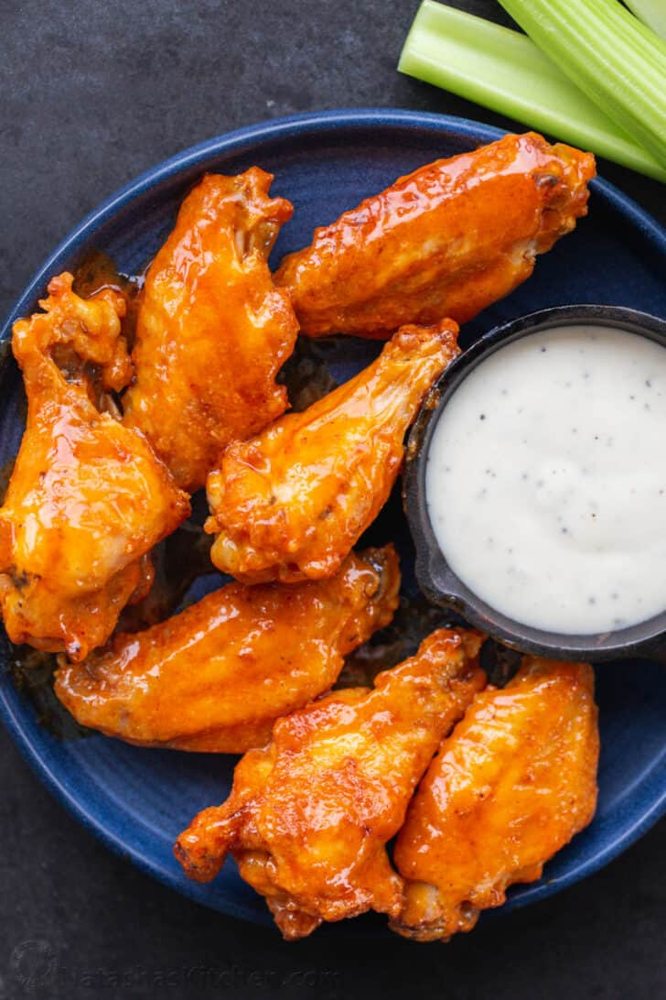

Crispy Buffalo Wings

Delicious Buffalo Wings that you can make at home
Homemade Buffalo Wings have a secret ingredient that makes them super crisp and irresistible. The easy buffalo sauce is just 3 ingredients and makes these taste like a restaurant-quality appetizer.
The beauty of baked buffalo chicken wings is that you can get the same, crispy texture without the need for splattering hot fryer oil. Using our handy baking powder trick and a wire rack, they get
a wonderful crust with a fraction of the fat of deep-fried versions. Tossing the crispy wings together with a buttery, tangy buffalo sauce is irresistibly good.
Ingredients
- Chicken Wings - Use fresh or thawed frozen wings that are broken down into drumettes and wingettes
- Baking Powder - The secret ingredient for getting your chicken wings ultra-crispy without the need for deep frying
- Salt - We use fine sea salt in nearly all of our cooking
- Garlic Powder - Adds a bit of zest to your wings before tossing them in the buffalo sauce
- Unsalted butter - Adds a nice creaminess to the buffalo sauce
- Frank's Original Red Hot Sauce - This is the perfect base for your wing sauce. It's tangy, a little sweet, and has just the right armount of spiciness.
- Sugar - Helps the sauce caramelize and thicken on your piping hot wings
Instructions
- Prep Chicken Wings - Cut wings in half to separate the drums from the wingettes. Pat the wings dry with a paper towel. Preheat the oven and line a rimmed baking sheet with foil and place a wire rack over the pan.
- Make dry seasoning - Combine baking powder, salt, and garlic powder.
- Season the wings - Place the chicken wings in a large mixing bowl and toss them in the dry seasoning until well-coated. Assemble the wings in a single layer over the rack.
- Bake - in the center of the oven for 50 minutes, flipping halfway.
- Make the Buffalo Sauce - In a medium bowl, stir together melted butter, sugar, and hot sauce.
- Toss Wings in Sauce - Transfer chicken wings to a bowl, and toss, drizzle with sauce and toss to coat. Serve with your favorite sauce.